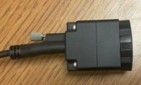
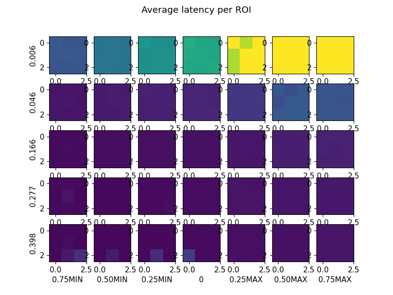
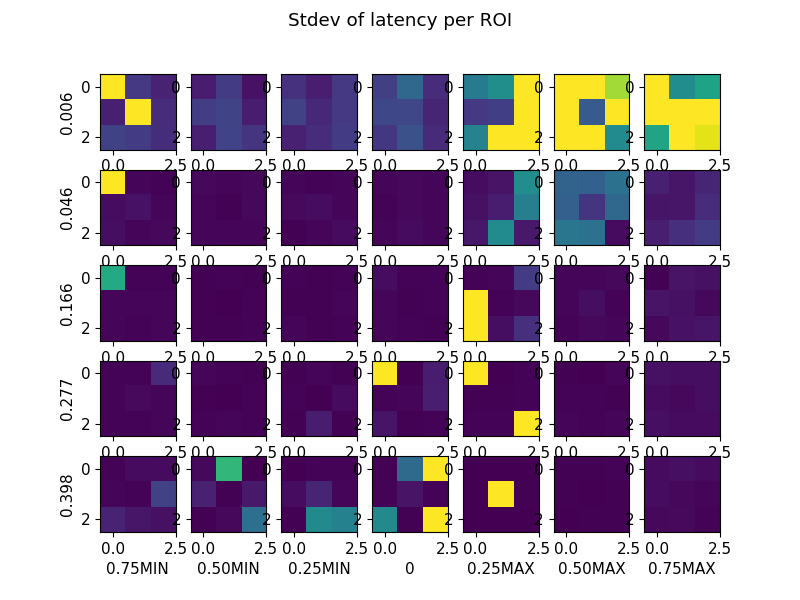
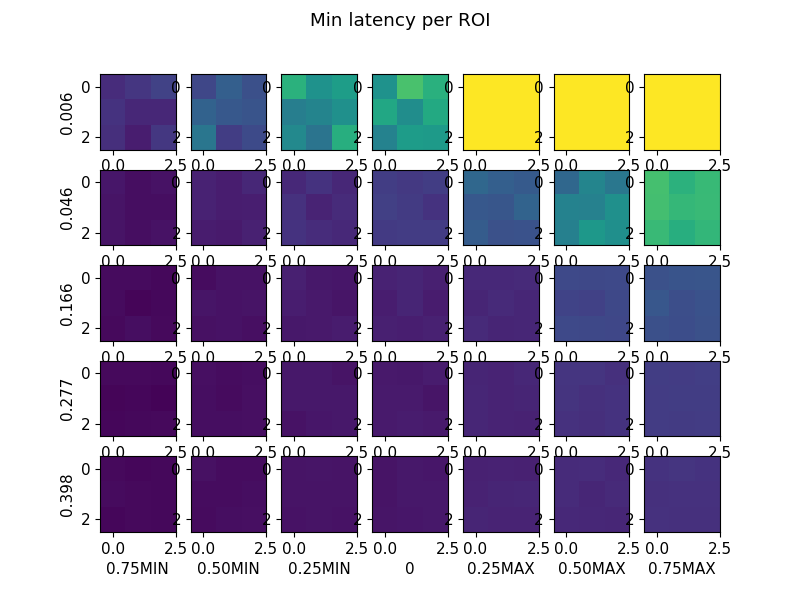
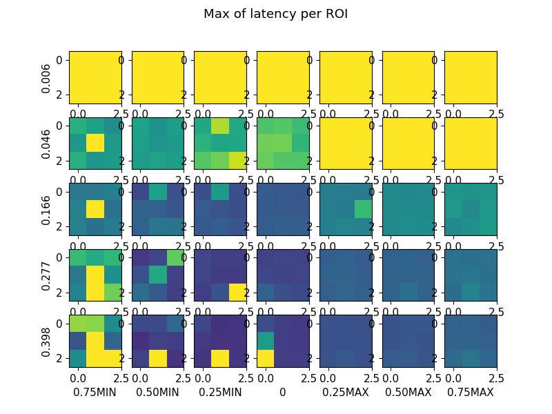
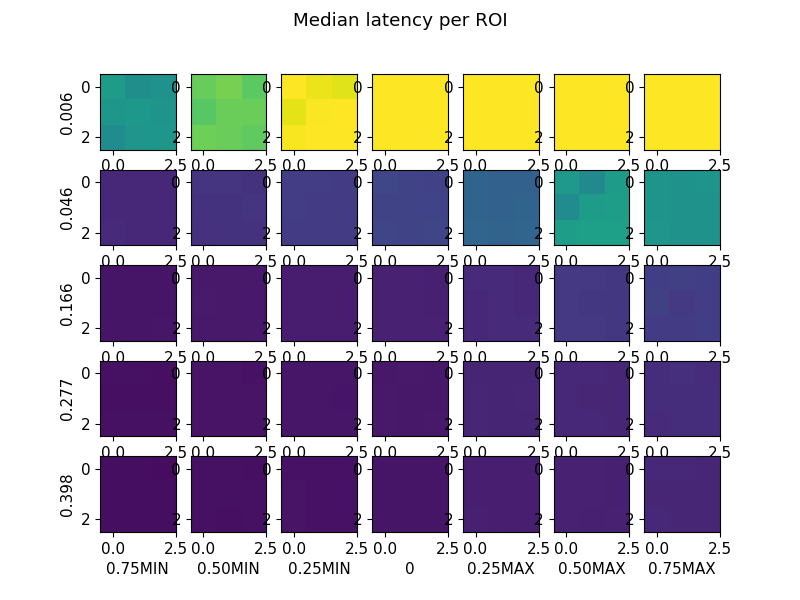

Event Camera: Latency Evaluations
More information about the latency evaluations can be found in the paper
R?mi V Chassagnol, Timothy J Blattner, Litorja Maritoni, Peter Bajcsy,
"Specifications for Pixel Latency Measurements of Event Cameras" (under review)
Select Latency Evaluation Configuration
|
Camera ID
SilkyEvCam HD ID1
SilkyEvCam HD ID2 SilkyEvCam VGA ID3 |
Camera Lens
with
without |
Latency Measurement
Avg
StDev Min Max Median |
Event Polarity
0
 1 
|
Aceessible Measurements
After selecting the configuration inputs above, a user can explore interactively plots and tables with latency measurements in [microseconds] for three event cameras (two models), 5 irradiance values, 7 bias settings, and with or without a lens The event measurements are collected over 5 ms exposure time. Figure 1 shows the measurements accessibble via the web interactive interface.
The accessible information has been extracted from 2006 latency measurements ~ 1.3 MB (1100 figures). Raw event data were processed using OpenEB library.
The number of latency measurements corresponds to the following variations:
- 3 event cameras
- event cameras without and with a lens
- 2 types of events (increasing or decreasing intensity events)
- 5 irradiance values
- 7 bias settings of event cameras
- 9 regions of interest (each 10 x 10 pixels)
- ~5 latency replicate measurements over 5 ms interval per configuration
We report statistics by averaging over 5 replicates per configuration.
Contributors:
Contact:
Peter Bajcsypeter.bajcsy@nist.gov
Phone: 301.975.2958